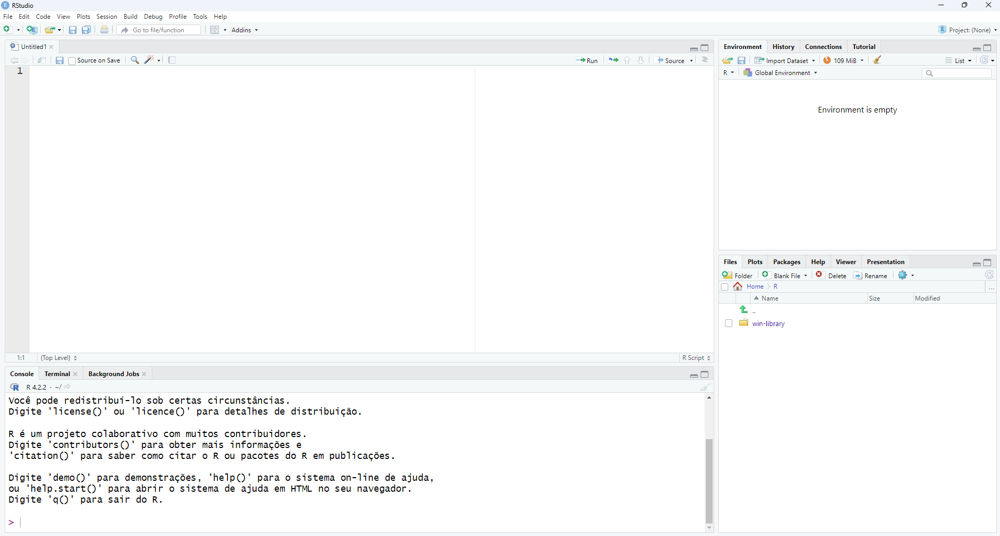

# Integer representing the number of shares in a portfolio
num_shares <- 100
# Floating-point number representing the inflation rate
inflation_rate <- 3.5
# Checking the class of inflation_rate
class(inflation_rate)[1] "numeric"To install R, download it from http://www.r-project.org. Then, install the IDE (Integrated Development Environment) R Studio.
When you open RStudio, click on the File/ New File/ R Script menu (or press Ctrl+Shift+N). You should see a structure similar to the one shown in the figure below.

Note that there are four panels:
Script Panel (top left): This panel is where you can write, edit, and run R scripts. It provides features such as syntax highlighting, autocomplete, and code checking to assist with coding.
Console Panel (bottom left): The console is where R code is executed and results are displayed. You can enter commands directly here and see the results immediately. It also maintains a history of executed commands, which can be useful for future reference.
Environment/Workspace (top right): This panel displays information about objects (such as variables, functions, etc.) currently loaded in R’s memory. It shows details such as the object’s name, type, and current value. This is useful for monitoring and managing objects during a work session.
Files/Plots/Packages/Help (bottom right): A panel with various features.
Files: This tab allows you to browse and manage your project’s files. You can create, rename, delete, and organize files and folders directly within RStudio.
Plots: Here, the plots generated by R are displayed. When you create a plot using visualization functions in R, the result is shown in this tab. This facilitates visual data analysis and inspection during the creation process.
Packages: In this tab, you can view and manage the packages installed in your R environment. It displays a list of all installed packages, along with their version and status (loaded or not). Additionally, you can install new packages, update existing ones, and load or unload packages as needed for your work.
Help: This tab provides quick access to documentation and help information about R functions, packages, and other resources. You can search for specific topics and access the official documentation directly within RStudio. This is useful for obtaining information about a function’s syntax, usage examples, and details about available parameters.
Whenever you learn a new programming language, it’s essential to first understand the basic data types it supports.
In R, there are four basic data types available: numeric, logical, character, and factor.
Numeric data is used to express quantitative values, such as prices, rates, and quantities, and is represented by integers or decimals.
# Integer representing the number of shares in a portfolio
num_shares <- 100
# Floating-point number representing the inflation rate
inflation_rate <- 3.5
# Checking the class of inflation_rate
class(inflation_rate)[1] "numeric"The class() function is used to determine the class of a variable. In other words, it provides information about the type of data that a variable represents. In the example above, the inflation_rate variable belongs to the numeric class.
Logical data is used to represent states or conditions, such as true or false, and is useful in logical operations and comparisons.
# Checking if the interest rate is increasing
interest_rate_rising <- TRUE
# Checking if share prices are falling
share_price_falling <- FALSE
# Checking the class of share_price_falling
class(share_price_falling)[1] "logical"Character data is used to represent text, such as country names, company names, or categories, and is essential for descriptive analyses and communication of results.
# Name of a country
country <- "Brazil"
# Name of a multinational company
company <- "Petróleo Brasileiro S.A."
# Checking the class of country
class(country)[1] "character"Factors are used to represent categorical variables, such as classifications, categories, or groups, offering an efficient way to handle discrete and qualitative data.
# Credit risk classification of a company
credit_risk <- factor(c("Low", "Medium", "High", "Low", "High"))
# Checking the class of credit_risk
class(credit_risk)[1] "factor"The levels() function returns the levels (or categories) of a factor. This is useful to understand which categories are represented and to perform data manipulation operations based on these categories.
# displaying credit risk levels
levels(credit_risk)[1] "High" "Low" "Medium"The R environment refers to the workspace where all variables, functions, and objects created during an R session are stored and managed. The environment includes both the objects you create and those that are automatically loaded via packages or other data import mechanisms (more on packages in Section 2.4).
For example, using the ls() function (which lists the names of objects in the current environment), we can see all objects currently present in the R environment.
ls()If you have correctly executed all the commands in Section 1.2, you should see the following output in the console:
[1] "company" "country" "num_shares"
[4] "share_price_falling" "inflation_rate" "interest_rate_rising"
In Section 1.2, several variables were created. For example, the company variable stores a character string. Previously, you saw how to list all defined variables in your environment. But what exactly are variables?
In R, variables are fundamental elements used to store and manipulate data. They are like containers that hold values, objects, or expressions. When you assign a value to a variable, you are essentially giving it a name to access and manipulate it later.
For example, by writing share_price <- 10, you are creating a variable called share_price and assigning it the value 10. Now, whenever you use share_price in your code, you are referring to this value.
It is a common practice to choose descriptive variable names that help understand their purpose or content. For example, in an economic context, you might use share_price to represent a shares’s price or inflation_rate to represent the inflation rate.
To assign a value to a variable, use the <- operator. The = operator can also be used for assignment. Both have the same practical effect in R, and the choice between them usually comes down to personal preference and coding style, although some style guides recommend using <-.
We can use the is.* family of functions to verify the types of some variables in our workspace.
company variable:is.character(company)This will return TRUE if the company variable is of type character.
country variable:is.character(country)Just like for the variable company, this will return TRUE if the variable country is of type character.
num_shares:is.numeric(num_shares)This will return TRUE if the variable num_shares is of type numeric.
share_price_falling:is.logical(share_price_falling)This will return TRUE if the variable share_price_falling is of type logical.
inflation_rate:is.numeric(inflation_rate)Just like for the variable num_shares, this will return TRUE if the variable inflation_rate is of type numeric.
interest_rate_rising:is.logical(interest_rate_rising)This will return TRUE if the variable interest_rate_rising is of type logical.
These examples illustrate how you can use the is.* functions to check the type of variables, helping ensure that you are handling data correctly in your analyses.
Another important family of functions is the as.* functions. They are used to convert an object from one type to another. They allow changing the data type of a variable, which can be useful in various situations, such as performing specific operations that require a certain data type or ensuring data type consistency in the code.
Some of the most common as.* functions include:
as.character() converts to character:number <- 123
number_character <- as.character(number)as.numeric() converts to numeric:text <- "3.14"
number <- as.numeric(text)as.logical() converts to logical:number <- 0
logical <- as.logical(number)These functions are useful for ensuring that data types are correct in your code and for guaranteeing that you can perform the desired operations on your objects.
However, it is important to note that not all conversions may be successful, especially when there is a loss of information (e.g., when converting from character to numeric).
Therefore, it is always a good practice to verify if the conversion was done correctly and if the resulting data is as expected.
Here is an example of converting a character to numeric with non-numeric text:
text <- "abc"
number <- as.numeric(text)Warning: NAs introduzidos por coerçãoIn this case, the conversion will fail, returning NA (Not Available) and issuing a warning message.
In any data analysis, it is common to work with datasets that have different structures and formats.
Let’s explore four fundamental data structures in R: vector, matrix, list, and DataFrame.
A vector in R is a one-dimensional data structure with elements of the same type. Use c() to create vectors:
# share prices vector
share_prices <- c(100, 110, 105, 120, 115)In some cases, it is useful to define sequences of numbers using the : operator and the seq() function.
# Sequence from 1 to 10:
sequence <- 1:10
sequence [1] 1 2 3 4 5 6 7 8 9 10# Sequence from 1 to 10 with an increment of 2:
increment_sequence <- seq(1, 10, by = 2)
increment_sequence[1] 1 3 5 7 9To check the size of a vector, you can use the length() function.
# checking the size of the share prices vector
length(share_prices)[1] 5length(1:10)[1] 10To access elements in a vector in R, you can use numeric or logical indices inside square brackets [ ].
You can access elements using numeric indices within square brackets [ ].
For example, vector[i] accesses the element at position i of vector.
# share prices vector
share_prices <- c(100, 110, 105, 120, 115)
# Accessing the second element of the vector
second_element <- share_prices[2]
# Accessing a range of elements from the vector
multiple_elements <- share_prices[3:5]You can also access elements using logical indices inside square brackets [ ].
For example, vector[logical_indices] returns the elements of the vector where the logical indices are TRUE.
# Accessing share prices greater than 110
prices_above_110 <- share_prices[share_prices > 110]A matrix in R is a two-dimensional data structure consisting of rows and columns of elements of the same type.
It is useful for representing tabular datasets, such as time series data or covariance matrices.
# Asset returns matrix
asset_returns <- matrix(c(0.05, 0.03, 0.02, 0.04, 0.06, 0.03),
nrow = 2, byrow = TRUE)
rownames(asset_returns) <- c("Share 1", "Share 2")
colnames(asset_returns) <- c("Year 1", "Year 2", "Year 3")The code above creates a matrix called asset_returns that stores the returns of two assets over three years.
The matrix() function is used to create the matrix.
The vector c(0.05, 0.03, 0.02, 0.04, 0.06, 0.03) contains the return values, filled row by row.
Parameters nrow = 2 and byrow = TRUE specify that the matrix should have 2 rows (to represent two assets), and values are filled by row.
The rownames() and colnames() functions assign names to the rows (“Share 1” and “Share 2”) and columns (“Year 1”, “Year 2”, “Year 3”).
The class() function returns the class of the object, which in this case will be “matrix,” indicating that asset_returns is a matrix in R.
The dim() function returns the dimensions of the matrix, i.e., the number of rows and columns.
# Verifying the matrix dimensions
dim(asset_returns)[1] 2 3This will output [2, 3], indicating that the matrix has 2 rows and 3 columns.
The length() function returns the total number of elements in an object.
For a matrix, this will return the total number of elements, which is the product of the number of rows and columns.
length(asset_returns)[1] 6To access rows, columns, and elements in a matrix in R, you can use numeric indices or names (if defined).
Here’s how to do it:
matrix[i, ] accesses row i, and matrix[, j] accesses column j. To access a specific cell, you use matrix[i, j], where i is the row number and j is the column number.# Accessing the first row of the matrix
first_row <- asset_returns[1, ]
# Accessing the second column of the matrix
second_column <- asset_returns[, 2]
# Accessing the element in the second row and third column
element <- asset_returns[2, 3]
# Accessing more than one column
selected_columns <- asset_returns[, c(1, 3)]# Accessing the row named "Share 1"
share1 <- asset_returns["Share 1", ]
# Accessing the column named "Year 2"
year2 <- asset_returns[, "Year 2"]
# Accessing the element in "Share 2" and "Year 3"
specific_element <- asset_returns["Share 2", "Year 3"]In R, unlike other programming languages, the indices of rows and columns in matrices (as well as in vectors, lists, etc.) start at 1 instead of 0.
This means the first element of a matrix is at index 1, the second at index 2, and so on.
In R, a list is a flexible data structure that can store elements of different types, such as vectors, matrices, other lists, or even functions. Lists are useful when you need to store and manipulate heterogeneous data sets or complex structures.
We can create a list that stores information about a country, such as its name, GDP, inflation rate, and a time series of exchange rate values.
# Creating a list with country information
country_info <- list(
name = "Brazil",
gdp = 1609,
inflation = 0.05,
exchange_rates = c(4.86, 5.13, 5.20, 5.07, 4.97)
)In this example, country_info is a list containing four elements:
name: the name of the country (character type).gdp: the country’s Gross Domestic Product (numeric type).inflation: the country’s inflation rate (numeric type).exchange_rates: a time series of the country’s exchange rate values (numeric vector type).This list exemplifies how we can store different types of data in a list in R.
It can be used to represent a country’s economic information in an organized and accessible manner.
To access individual elements in a list by name, we use the dollar operator $.
# Accessing the name of the country
country_info$name[1] "Brazil"# Accessing the GDP
country_info$gdp[1] 1609# Accessing exchange rates
country_info[["exchange_rates"]][3][1] 5.2We can also access individual elements in a list by index using square brackets [ ].
# Accessing the first element of the list (country name)
first_element <- country_info[[1]]
# Accessing the third element of the list (inflation rate)
third_element <- country_info[[3]]You may have noticed the use of double brackets to access list elements.
In R, single brackets ([]) and double brackets ([[]]) serve different purposes when accessing elements in a list.
Understanding Lists Through the Train Analogy
Imagine a list in R as a train, and each element of the list is a wagon of the train.
Now, inside each wagon, you can store different types of cargo, such as boxes, sacks, or even other wagons.
For instance, in one wagon, you might have a vector; in another, a matrix; and in another, just a single number.
Each element of the list can be different in type and content, just as each wagon of a train can hold different things.
Accessing a Specific Wagon
To access specific information about Brazil, such as the country name or GDP, we use single brackets [ ].
For example:
country_info["nome"]: we get the wagon containing the country name, which is “Brazil”.country_info[2]: we get the second wagon, which contains the GDP, with a value of 1609.Accessing Elements Inside a Wagon
If we want to access specific elements inside a wagon, we use double brackets [[ ]].
For example:
country_info[["exchange_rates"]]: we open the wagon containing the country’s exchange rate information and access its contents, which is a vector of different exchange rate values over time.To access a specific value from this vector, we can use single brackets [ ] again:
country_info[["exchange_rates"]][3]: this opens the wagon containing the exchange rate vector and retrieves the third value, which is 5.20.Using the class() function, we can observe the difference between objects obtained with single and double brackets.
class(country_info["nome"])[1] "list"class(country_info[["nome"]])[1] "NULL"In summary, single brackets are used to access subsets of elements in a list while preserving their structure, whereas double brackets are used to access individual values from a list, without preserving the original structure.
DataFrames are tabular structures in R where columns can have different types.
You can create one using the data.frame() function:
# Creating a dataframe with economic data
economic_data <- data.frame(
country = c("Brazil", "USA", "China", "India", "Japan"),
continent = factor(c("America", "America", "Asia", "Asia", "Asia")),
population = c(213, 328, 1441, 1380, 126),
gdp_per_capita = c(10294, 65741, 10380, 2353, 41581),
inflation = c(0.02, 0.01, 0.04, 0.06, 0.005)
)We can access individual elements, rows, or columns of a dataframe using numeric indices or column names.
# Accessing the first row of the dataframe
(first_row <- economic_data[1, ]) country continent population gdp_per_capita inflation
1 Brazil America 213 10294 0.02# Accessing the "country" column of the dataframe
(country <- economic_data$country)[1] "Brazil" "USA" "China" "India" "Japan" # Accessing the element in the second row and third column of the dataframe
(element <- economic_data[2, 3])[1] 328We can combine dataframes based on common columns using the merge() function.
# Creating another dataframe for merging
demographic_data <- data.frame(
country = c("China", "India", "Japan", "Brazil", "USA"),
life_expectancy = c(76, 69, 84, 75, 79)
)
# Performing a merge based on the "country" column
(data_and_demographic_info <- merge(economic_data, demographic_data, by = "country")) country continent population gdp_per_capita inflation life_expectancy
1 Brazil America 213 10294 0.020 75
2 China Asia 1441 10380 0.040 76
3 India Asia 1380 2353 0.060 69
4 Japan Asia 126 41581 0.005 84
5 USA America 328 65741 0.010 79We can also add new rows of data to an existing dataframe.
# Creating another dataframe to combine rows
more_data <- data.frame(
country = c("South Africa", "Germany"),
continent = c("Africa", "Europe"),
population = c(60, 83),
gdp_per_capita = c(6151, 52947),
inflation = c(0.025, NA),
life_expectancy = c(58, 81)
)
# Combining dataframes by rows
(all_data <- rbind(data_and_demographic_info, more_data)) country continent population gdp_per_capita inflation life_expectancy
1 Brazil America 213 10294 0.020 75
2 China Asia 1441 10380 0.040 76
3 India Asia 1380 2353 0.060 69
4 Japan Asia 126 41581 0.005 84
5 USA America 328 65741 0.010 79
6 South Africa Africa 60 6151 0.025 58
7 Germany Europe 83 52947 NA 81We can obtain information about the size of the dataframe using the dim(), nrow(), and ncol() functions:
dim(all_data) # Returns the number of rows and columns in the dataframe[1] 7 6nrow(all_data) # Returns only the number of rows[1] 7ncol(all_data) # Returns only the number of columns[1] 6You may have noticed in the more_data dataframe that the inflation value for Germany is marked as NA.
An NA value, short for “Not Available,” indicates a missing value in a dataset.
In the example above, the presence of NA in the inflation column for Germany means that no inflation value is available for this country in the provided table.
A value can be marked as NA in various situations, including:
Missing data: When no information is available for a specific field in a dataset.
Example: Lack of data on unemployment rates in certain regions due to unavailability or incomplete reporting.
Measurement or collection errors: Errors during the measurement or data collection process can result in inaccurate or missing values.
Example: Recording a country’s GDP might lead to missing values for certain quarters due to collection errors.
Inapplicable values: Some variables might not apply to all cases.
Example: In analyzing government spending on education, some countries might not have data due to differences in reporting policies or lack of investment in education.
Unrecorded values: In some databases, specific values might not be recorded intentionally, either for privacy reasons or because they are irrelevant to the analysis.
Example: Collecting data on individuals’ net worth in an income survey might result in some participants opting not to disclose financial information for privacy reasons. In such cases, the corresponding values would be marked as NA.
If we want to filter data based on a specific criterion, we can use logical operators along with dataframe indexing:
all_data$continent == "Asia" # Returns a logical vector indicating which rows belong to the "Asia" continent[1] FALSE TRUE TRUE TRUE FALSE FALSE FALSEall_data[all_data$continent == "Asia", ] # Filters and returns only the rows where the continent is "Asia" country continent population gdp_per_capita inflation life_expectancy
2 China Asia 1441 10380 0.040 76
3 India Asia 1380 2353 0.060 69
4 Japan Asia 126 41581 0.005 84all_data$continent == "Asia" & !is.na(all_data$continent) # Ensures we exclude missing values before filtering[1] FALSE TRUE TRUE TRUE FALSE FALSE FALSEall_data[all_data$continent == "Asia" & !is.na(all_data$continent), ] # Filters rows where the continent is "Asia", ignoring missing values country continent population gdp_per_capita inflation life_expectancy
2 China Asia 1441 10380 0.040 76
3 India Asia 1380 2353 0.060 69
4 Japan Asia 126 41581 0.005 84We can also find specific rows based on conditions applied to numerical columns:
merged_data\(population == max(merged_data\)population) # Returns a logical vector indicating the row(s) with the maximum population
which(merged_data\(population == max(merged_data\)population)) # Returns the index of the row(s) where the population is maximum
index <- which(merged_data\(population == max(merged_data\)population)) # Stores the index of the maximum population row(s)
merged_data[index, ] # Retrieves the row(s) corresponding to the maximum population